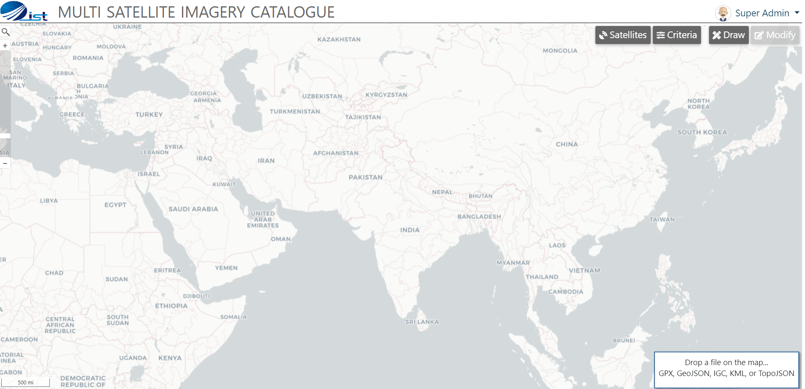
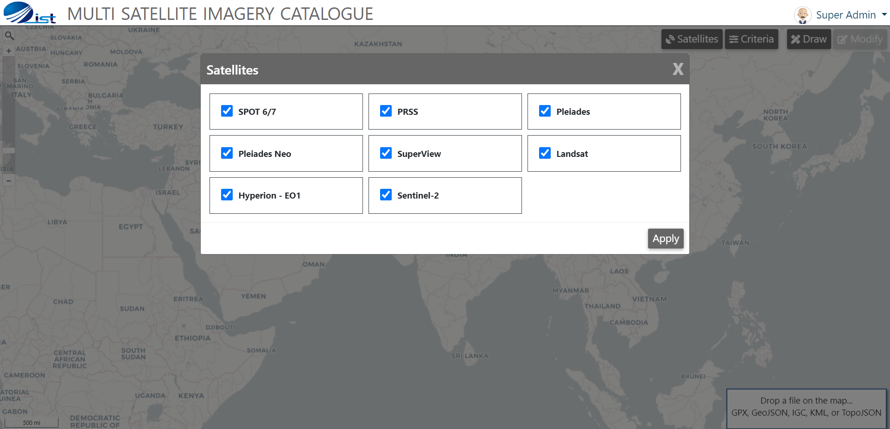
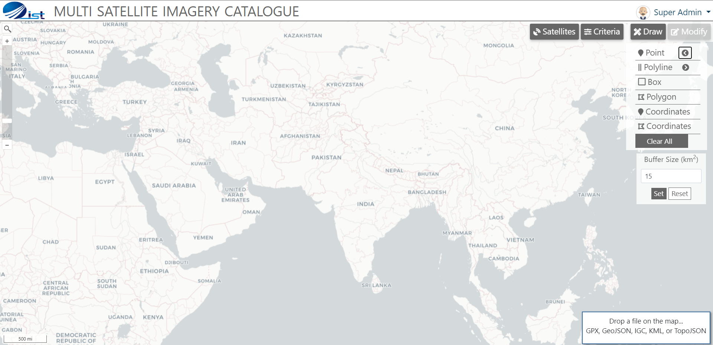
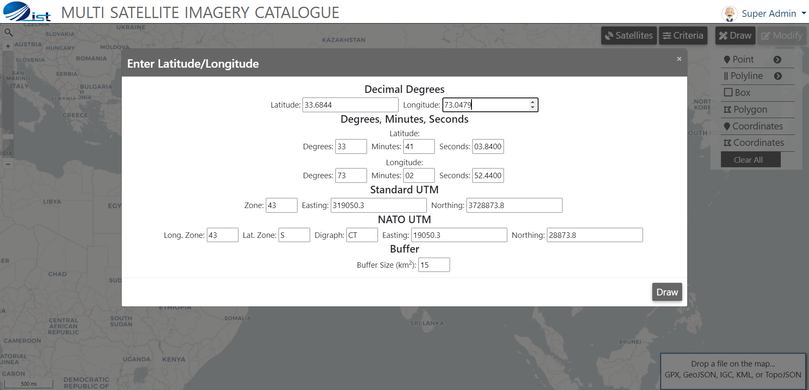
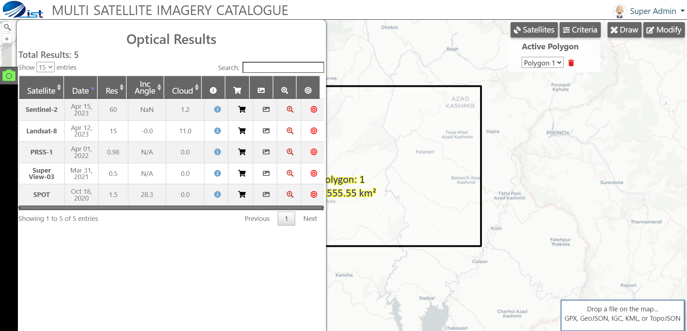
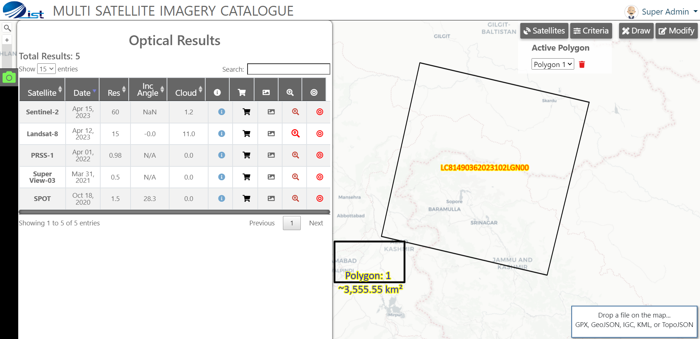
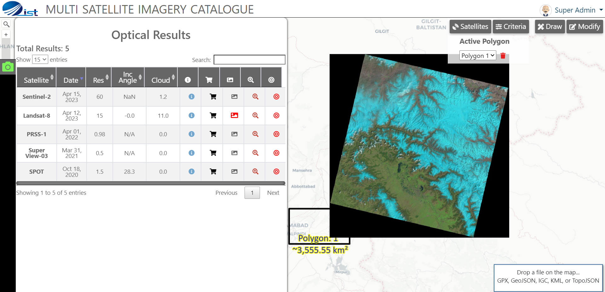
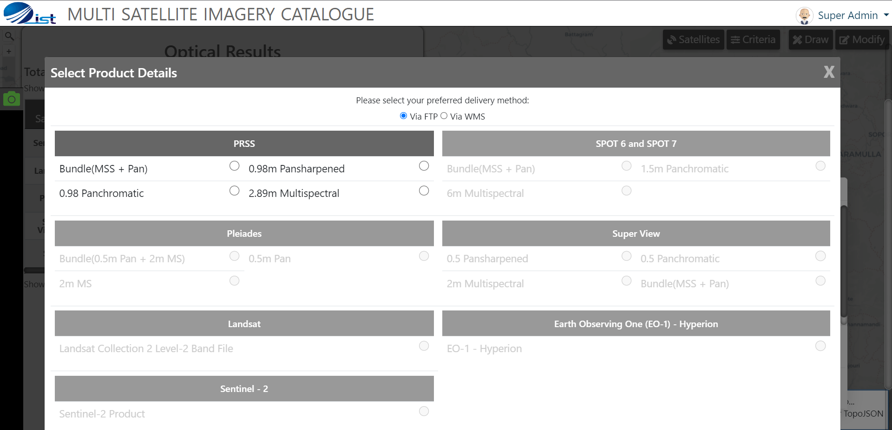
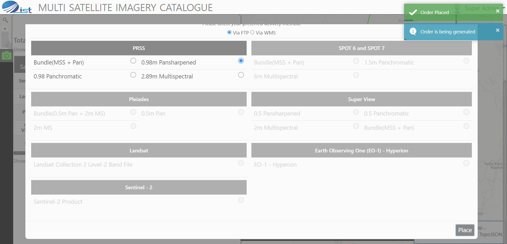

<div class="container">
  <div class="row topspace">
    <article class="col-sm-8 maincontent">
      <div class="your-class">
        <div></div>
        <div></div>
        <div></div>
        <div></div>
        <div></div>
        <div></div>
        <div></div>
        <div></div>
        <div></div>
        <div></div>
        <div></div>
        <div></div>
        <div></div>
        <div></div>
        <div></div>
        <div></div>
        <div></div>
        <div></div>
        <div></div>
      </div>
      <br />
      <p>
        In 2022, I proposed this idea under my Master's degree and undertook
        this as my research project.
      </p>
      <br />
      <p>
        The use of Satellite Remote Sensing (SRS) data in various domains has
        increased exponentially for multifarious applications. As the number of
        satellites grow, need for a global multiple satellites catalogue, easier
        approach, user-friendly & faster dissemination becomes desirable.
        Although, there are individual portals available for different
        satellite vendors for searching but there is no single portal that
        allows browsing of multiple satellites under a single roof. This leads for
        the need to design & develop a system for online visualization,
        selection, & dissemination of multiple-SRS data products through a
        single window that serves images in ready-to-use format for research and
        remote sensing applications.
      </p>
      <br />
    </article>
    <aside class="col-md-4 sidebar sidebar-left">
      <div class="widget">
        <ul class="list-group">
          <li class="list-group-item pull-left">
            <h4 class="custom-subsubheader">MS Thesis Project</h4>
            <p><strong>2023</strong></p>
          </li>
        </ul>
      </div>
    </aside>
  </div>
</div>
